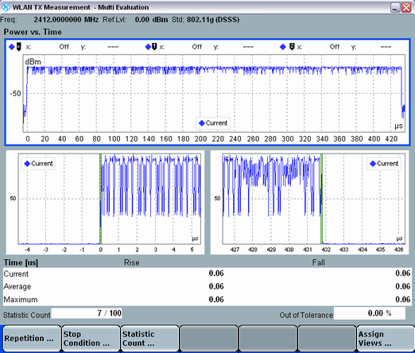

Views Power vs. Time
The "Power vs. Time" results are displayed in three diagrams that can be selectively enabled or disabled:
- The "Burst" diagram, showing the low-resolution burst traces, i.e. signal power in dBm vs. time
- The "Rise" and "Fall" diagrams, showing the high-resolution ramp traces
For DSSS signals, an additional table is displayed below the diagrams, presenting statistical "Rise Time" and "Fall Time" values and highlighting violations of the corresponding limits.
For OFDM signals, the table presents statistical timing error results.
The calculation of timing error requires suitable trigger to be specified as a trigger source. Internal IF power trigger cannot be used. |

WLAN multi-evaluation: Power vs. time results
The content of the ramp diagrams depends on the selected "Standard":
- For OFDM signals, the diagrams show the absolute signal power in dBm.
- For DSSS signals, the focus is on the associated limits (see "Power vs. Time Limits"). The signal power is presented as a percentage of the "Reference Power", which can be set to either the maximum or to the mean burst power. The green vertical lines indicate the 10% and 90% threshold crossings, the 0 µs position corresponds to the start of the measured frame.
Configure the measurement always to cover whole bursts.
For query of the results via remote control, see:
For additional information, refer to "Common View Elements".